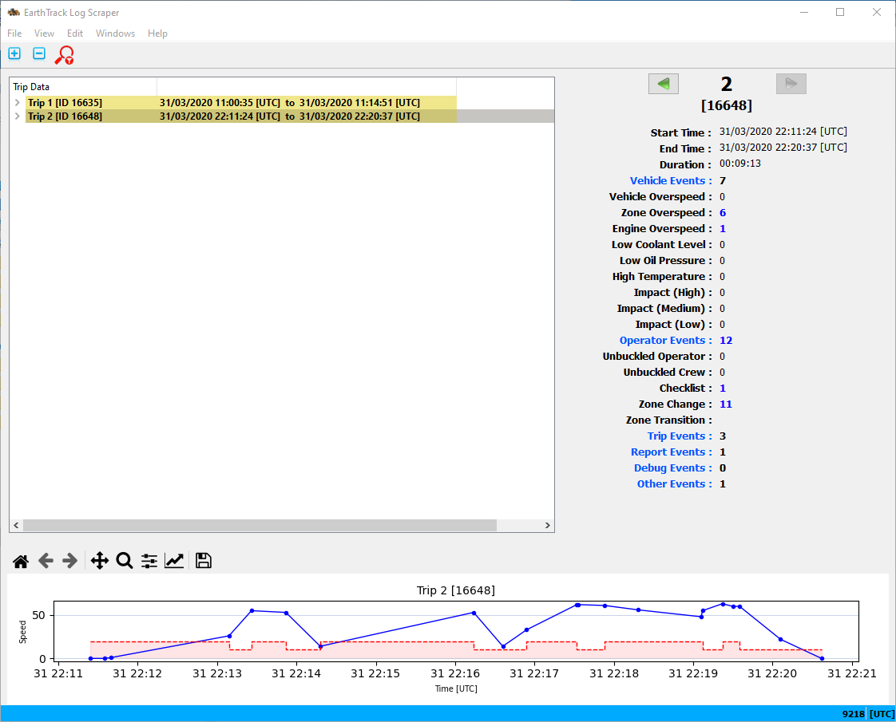
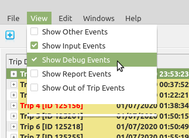

Once a log file has been opened the trips included in the log file will be listed in the Trip Data pane on the left, with the first trip being the currently selected trip. Trips are identified with a Trip Number starting at 1 for the first trip in the log file, as well as the Trip signon ID. The signon ID is included in the SIGON event and ties all events in a trip together.
On the right hand side the Trip Summary pane shows summary information for the selected trip which at the start is trip 1.
The bottom pane shows a speed plot based on the speed reported in log event headers. Also shown is a zone plot which is based on ZONECHANGE event information; in this case the zone speed shown is from application configuration and not device configuration as this is not available in the log file for the trip. The theory being that for a given site zone speeds should not change too often.
Time on all views is presented in UTC or local time (as an offset from UTC) format depending on an application configuration parameter. The current setting is displayed on the right side of the application status bar at the bottom of the application window.
The controller ID applicable to the selected trip is also shown on the application status bar at the bottom of the application window, which in the example illustrated is 9218.
The Trip Data pane is structured as a tree, with trips as the trunk. A trip can be expanded to reveal the events in the trip, and events can be expanded to show specific information for that event. There are also "expand all" and "collapse all" toolbar buttons to expand or collapse all trips, events, and event data items.
Navigation can be achieved using the mouse and clicking on the + or - (expand or collapse) branch points. Alternatively, use the LEFT or RIGHT arrow keys to collapse or expand the current selected item.
The currently selected item, and therefore the currently selected trip can be set by selecting it with the mouse, or by using the UP or DOWN arrow keys to navigate up or down the branch the item is on. The HOME, END, PAGE_UP and PAGE_DOWN keys can also be used to select the first/last trips or to skip a page of items at a time.
The arrow buttons on either side of the trip identifier on the Trip Summary pane can also be used to navigate to the next or previous trip.

The parsing of the log file detects "Other" event types, that while detected are not yet supported by the application. Where not yet supported in this context means that no details are shown for these events. Similarly INPUT and DEBUG events can also be shown in the Trip Data pane, as can post trip events.

Showing Other, INPUT, DEBUG, or our of trip events can be selected via application menu item checkboxes. Note that these settings from the application menu revert to configuration values the next time the application is started. Note that even if configuration is set not to show INPUT events these events still contribute to the speed plot.
